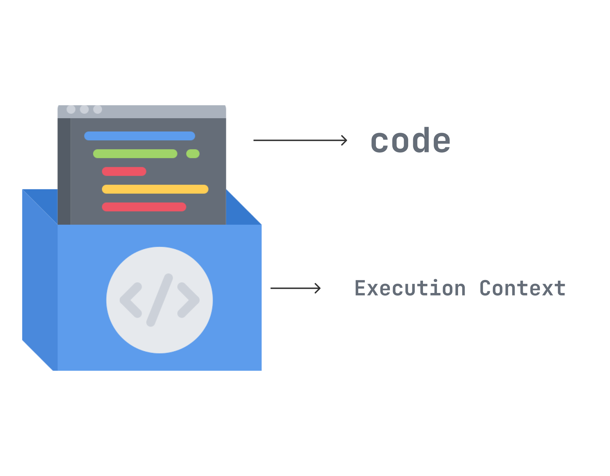

JavaScript has 3 types of scope:
Block scope
{
let name = "alex";
}
// x can NOT be used here
{
var x = 2;
}
// x CAN be used here
Function scope
function myFunction() {
var carName = "Volvo"; // Function Scope
}
function myFunction() {
let carName = "Volvo"; // Function Scope
}
function myFunction() {
const carName = "Volvo"; // Function Scope
}
Global scope
var carName = "Volvo"; // Global scope
function myFunction() {
// code here can also use carName
}
let carName = "Volvo"; // Global scope
function myFunction() {
// code here can also use carName
}
const carName = "Volvo"; // Global scope
function myFunction() {
// code here can also use carName
}
Execution Context
There are three types of execution context in JavaScript:
The Call (Execution) Stack
function greeting() {
sayHi();
}
function sayHi() {
return "Hi!";
}
// Invoke the `greeting`
function greeting();
The execution context is created in two stages:
Lexical Environment
A lexical environment is created in the creation stage of the execution
context.
Lexical
Environment is a
specification type based on the lexical nesting structure of JavaScript code and used to
define the association of identifiers to the values of variables and functions.
The Lexical Environment has three components:
The environment record is the place where the variable and
function declarations are stored inside the lexical environment.
There are also two types of environment record:
A new lexical environment is formed every time a function or block is executed. The environment
record of this lexical environment will contain all the variables and functions declared within
that particular function or block. For example:
function lexicalFn() {
let a = 1;
let b = 3;
}
The this binding
let obj = {
a: 2,
b: 4,
getSum: function () {
return this.a + this.b;
},
};
console.log(obj.getSum()); // 6
Resources:
Thank you for attention!